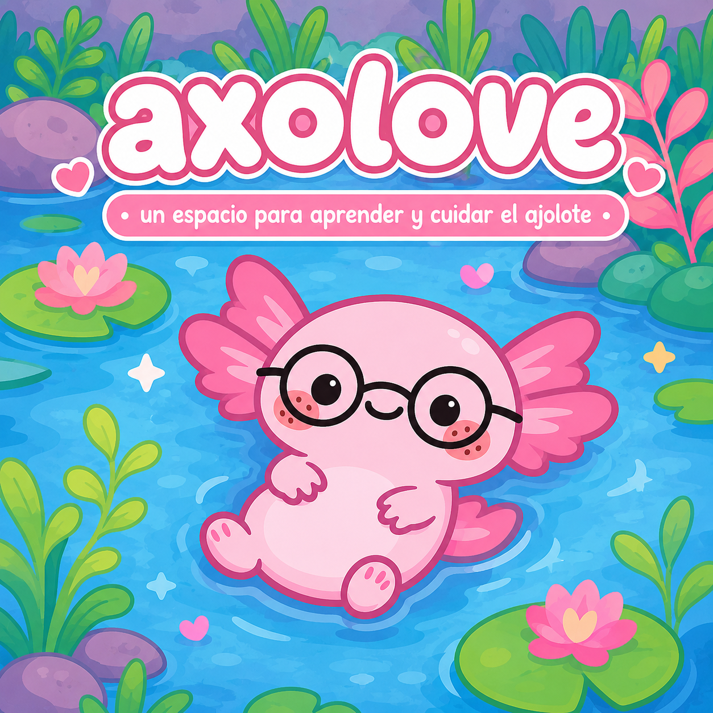

Axolove
Conoce al ajolote, el personaje principal de nuestro proyecto.
El ajolote mexicano es una especie única en el mundo. Vive principalmente en los canales de Xochimilco y es famoso por su capacidad para regenerar partes de su cuerpo. Sin embargo, actualmente se encuentra en peligro crítico debido a la contaminación, la pérdida de su hábitat y la introducción de especies invasoras.
Dato curioso:
El nombre "ajolote" proviene del náhuatl axólotl, que significa "monstruo de agua" o "perro de agua". Además, el ajolote puede regenerar patas, cola e incluso partes de su corazón y cerebro.
